Datei-Upload
FILE · Eingabefeld zum Anhängen von Dokumenten · Bildern an das CRF
Was ist ein Datei-Upload-Feld?
- 1.1Feld hinzufügen und Aufbau des Eigenschaftsbereichs
1.1Feld hinzufügen und Aufbau des Eigenschaftsbereichs
Überblick
Datei-Upload (FILE) ist ein Eingabefeld, in dem Dokumente oder Bilder unverändert angehängt werden, z. B. Befundberichte · Kopien von Einwilligungserklärungen. Nach dem Hinzufügen erscheint auf dem Canvas ein gestrichelter Bereich, und die zulässigen Formate und die Größenbegrenzung werden als Hinweis angezeigt. Gespeichert wird nicht die Datei selbst, sondern die Liste der angehängten Dateien; die Datei selbst wird in einer separaten Ablage aufbewahrt.
Bildschirmbeschreibung
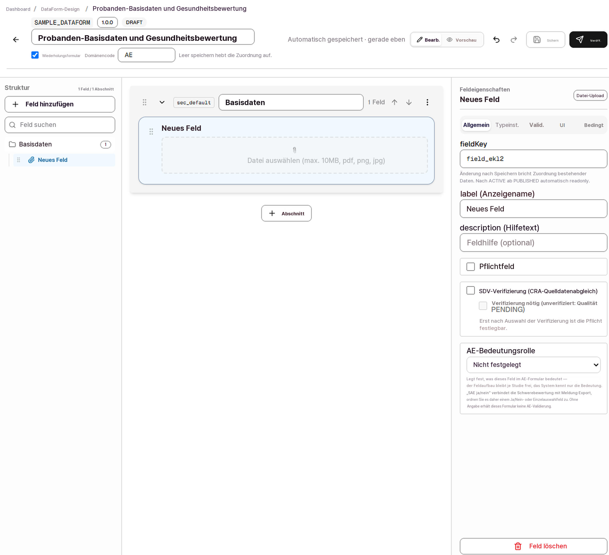
[+ Feld hinzufügen] — Wenn Sie hier den Typ festlegen, wird das Feld erstellt.
Im Strukturbaum wird das neue Feld hinzugefügt. Das Symbol hat die Form einer Büroklammer.
Auf dem WYSIWYG-Canvas erscheint ein gestrichelter Anhangbereich, darin der Hinweis „Datei auswählen (max. 10MB, pdf, png, jpg)“. Obwohl Sie nichts eingestellt haben, ist bereits eine Begrenzung angegeben — denn bei der Erstellung werden Standardbeschränkungen gesetzt. 3.1
fieldKey — der tatsächliche Schlüssel, unter dem der Wert gespeichert wird. 2.1
label (Anzeigename) · description (Hilfetext) — der auf dem Bildschirm angezeigte Name und die ergänzende Beschreibung. 2.1
Pflichtfeld · SDV-Verifizierung — werden in 2.2 · 2.3 behandelt.
AE-Bedeutungsrolle — legt die Bedeutung des Felds im AE-Formular fest. Wie der Bildschirmhinweis angibt, sind Ja/Nein- oder Einzelauswahlfelder zuzuordnen; bei diesem Typ wird daher nichts zugeordnet.
Typ-Badge „Datei-Upload“ — der Typ des ausgewählten Felds. Nach dem Hinzufügen kann er nicht mehr geändert werden.
5 Eigenschafts-Tabs — Allgemein · Typeinstellungen · Validierung · UI · Bedingt. Die Kapitel 2–6 dieses Handbuchs entsprechen den einzelnen Tabs.
Das Element „Nicht gemessen“ zulassen fehlt. Bei anderen Typen steht es unter AE-Bedeutungsrolle, bei diesem Typ unterstützt das System die Erklärung „Nicht gemessen“ nicht. Ohne Anhang wird das Feld einfach als leer erfasst. (※ 7.2)
Zu beachten
Unbedingt prüfen Datenschäden · Formular nicht abschließbar
- • ⛔ Achten Sie darauf, dass die Dateien keine Identifikationsdaten von Probanden enthalten. Auf Befundberichten · Auswertungsberichten sind häufig Name · Registriernummer · Geburtsdatum aufgedruckt. Vermerken Sie unbedingt im Hilfetext 2.1 und in helpText 5.4, dass diese vor dem Anhängen zu schwärzen sind — das System prüft den Dateiinhalt nicht.
- • Der Typ kann nach dem Hinzufügen nicht geändert werden, und nach der Veröffentlichung (PUBLISH) kann die Struktur selbst nicht mehr geändert werden. Haben Sie falsch gewählt, löschen Sie das Feld und fügen Sie es erneut hinzu.
Leicht missverständliches Verhalten
- • Gespeichert wird die Liste der angehängten Dateien. Die Datei selbst liegt in einer separaten Ablage; in diesem Feld wird nur erfasst, welche Dateien angehängt sind. Daher erscheint auch im Datenexport nicht die Datei selbst, sondern diese Liste.
Tab „Allgemein“ — Name · Pflicht · Verifizierung
- 2.1fieldKey · Anzeigename · Hilfetext
- 2.2Pflichtfeld
- 2.3SDV-Verifizierung (CRA-Quelldatenabgleich)
2.1fieldKey · Anzeigename · Hilfetext
Überblick
Bereich zum Festlegen des Namens des Felds. Der Speicherschlüssel (fieldKey) und der auf dem Bildschirm angezeigte Name (label) sind unterschiedliche Werte und dürfen zu unterschiedlichen Zeitpunkten geändert werden. Beim Datei-Upload weiß der Erfasser nicht, was anzuhängen ist, wenn es nicht in Worten erklärt wird; daher ist der Hilfetext besonders wichtig.
Bildschirmbeschreibung
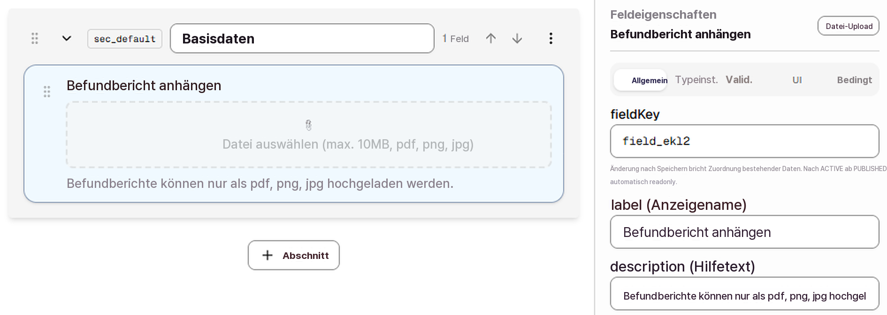
label (Anzeigename) — Geben Sie den Namen des Elements ein, der in der Eingabemaske angezeigt wird.
Wird auf dem Canvas als Titel über dem Anhangbereich angezeigt.
description (Hilfetext) — Geben Sie die ergänzende Beschreibung ein, die unter dem Anzeigenamen erscheint. Bleibt sie leer, wird nichts angezeigt.
Wird unter dem Anhangbereich angezeigt. Die Aufnahme zeigt „Befundberichte können nur als pdf, png, jpg hochgeladen werden.“.
fieldKey — der tatsächliche Schlüssel, unter dem der Wert gespeichert wird. Beim Hinzufügen eines Felds wird er automatisch vergeben, z. B. field_ekl2; wie der Bildschirmhinweis sagt: „Änderung nach Speichern bricht Zuordnung bestehender Daten“.
Zu beachten
Unbedingt prüfen Datenschäden · Formular nicht abschließbar
- • Geben Sie im Hilfetext an, was anzuhängen ist. Mit „Befundbericht anhängen“ allein ist nicht klar, zu welcher Untersuchung der Befundbericht gehört und ob ein Original oder eine Kopie gemeint ist. Wenn Sie den Anhang konkret beschreiben, kommt es seltener vor, dass Anhänge zurückgegeben werden.
- • Es ist hilfreich, die zulässigen Formate auch im Hilfetext anzugeben. So wie in der Aufnahme kann der Erfasser sie vor dem Anhängen prüfen — die Formate tatsächlich begrenzt jedoch der Tab „Typeinstellungen“. Achten Sie darauf, dass die Angaben an beiden Stellen übereinstimmen. 3.2
- • Ändern Sie den fieldKey nach dem Speichern nicht. Die Verknüpfung mit bereits angehängten Dateien bricht ab, und Validierungsregeln 4.3 und bedingte Anzeige Kap. 6, die auf dieses Feld verweisen, brechen ebenfalls.
Leicht missverständliches Verhalten
- • Der Anzeigename (label) kann jederzeit geändert werden. Gespeicherte Werte sind davon nicht betroffen.
2.2Pflichtfeld
Überblick
Legt fest, ob das Formular nur abgeschlossen werden kann, wenn in diesem Feld etwas angehängt ist. Als Pflichtfeld wird der Zustand ohne eine einzige Datei als nicht eingegeben gezählt. Da das Original vor Ort nicht immer sofort verfügbar ist, legen Sie vor der Festlegung auch fest, was geschieht, wenn sich der Anhang verzögert.
Bildschirmbeschreibung
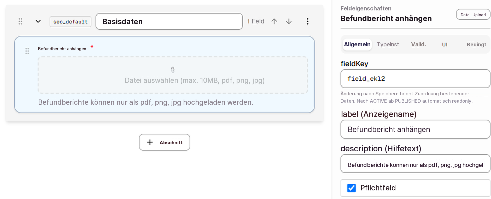
*Pflichtfeld — Wenn aktiviert, wird dieses Feld zum Pflichtfeld.
Auf dem Canvas erscheint rechts neben dem Anzeigenamen ein rotes *.
label · description — die in 2.1 eingegebenen Werte werden unverändert angezeigt.
Zu beachten
Unbedingt prüfen Datenschäden · Formular nicht abschließbar
- • ⛔ Bei diesem Typ gibt es keine Möglichkeit, „Nicht gemessen“ zu erklären. Andere Typen können „nicht feststellbar“ als Wert hinterlegen, beim Datei-Upload wird diese Funktion jedoch nicht unterstützt. Ist zu erwarten, dass das Original letztlich nicht beschafft werden kann, legen Sie das Feld nicht als Pflichtfeld fest, sondern ergänzen Sie ein separates Textfeld für die Begründung. (※ 7.2)
- • Ausgeblendete Felder sind von der Pflichtprüfung ausgenommen. Solange ein Feld durch bedingte Anzeige Kap. 6 verborgen ist, wird das Formular auch als Pflichtfeld ohne Anhang abgeschlossen.
Leicht missverständliches Verhalten
- • Erfüllt ist die Pflicht, „sobald mindestens eine Datei vorhanden ist“. Wie viele Dateien anzuhängen sind, lässt sich mit der Pflichteinstellung nicht festlegen — geben Sie die benötigte Anzahl im Hilfetext an. 2.1 · 3.3
- • Falsch hochgeladene Dateien können gelöscht werden. Auch die Löschung bleibt jedoch im Verlauf erfasst.
2.3SDV-Verifizierung (CRA-Quelldatenabgleich)
Überblick
SDV (Source Data Verification) ist das Verfahren, bei dem der Monitor (CRA) die eingegebenen Werte mit den Quelldaten der Prüfstelle abgleicht. Hier legen Sie fest, ob dieses Feld Gegenstand dieses Abgleichs ist. Diese Einstellung ist bei allen Feldtypen gleich, daher ist auch der Bildschirm unabhängig vom Typ identisch.
Bildschirmbeschreibung


SDV-Verifizierung (CRA-Quelldatenabgleich) — Wenn aktiviert, wird dieses Feld in die Abgleichliste des CRA aufgenommen.
Mit der Aktivierung wird das Unterelement aktiv.
Verifizierung erforderlich (unverifiziert: Qualität PENDING) — kann erst festgelegt werden, nachdem ① aktiviert wurde. Wenn aktiviert, bleibt der Qualitätsstatus der betreffenden Daten auf PENDING, bis der CRA den Abgleich abgeschlossen hat.
Bevor ① aktiviert ist, ist ② ausgegraut und inaktiv. Wie der Bildschirmhinweis sagt: „Erst nach Auswahl der Verifizierung ist die Pflicht festlegbar.“
Zu beachten
Unbedingt prüfen Datenschäden · Formular nicht abschließbar
- • Wird eine Datei ersetzt oder hinzugefügt, wird die Verifizierung aufgehoben. Der Qualitätsstatus fällt auf PENDING zurück, und der CRA muss erneut abgleichen.
Leicht missverständliches Verhalten
- • Häufig ist die angehängte Datei selbst die Quelldaten. Wurde ein Befundbericht unverändert hochgeladen, liegt das, was der CRA abgleichen soll, bereits auf dem Bildschirm; geben Sie daher im Hilfetext klar an, was mit was abzugleichen ist. 2.1
- • SDV kann nicht von der Person durchgeführt werden, die die Daten eingegeben hat. Das System erzwingt eine Kreuzprüfung (Cross-User SoD); eingebende und verifizierende Person müssen daher zwingend verschieden sein.
Hinweis
- • Der Qualitätsstatus durchläuft PENDING → VERIFIED → CLEAN. Ist auch nur ein Feld mit Verifizierungspflicht unverifiziert, können die betreffenden Daten nicht CLEAN werden.
Tab „Typeinstellungen“ — zulässige Formate · Größe · Anzahl
- 3.1Gesamtaufbau des Tabs „Typeinstellungen“
- 3.2allowedTypes · maxSizeMB
- 3.3Mehrfach-Upload (multiple)
3.1Gesamtaufbau
Überblick
Die Typeinstellungen des Datei-Uploads bestehen aus drei Feldern — sie legen fest, welche Formate 3.2 · bis zu welcher Dateigröße 3.2 · wie viele Dateien 3.3 angenommen werden. Anders als bei anderen Typen sind zwei Felder von Anfang an ausgefüllt — denn beim Erstellen des Felds werden Standardbeschränkungen mit festgelegt.
Bildschirmbeschreibung
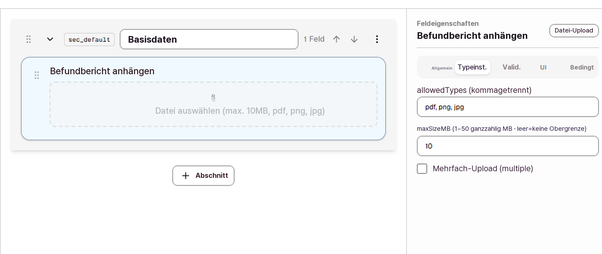
allowedTypes (kommagetrennt) — die zulässigen Dateierweiterungen. Anfangs ist pdf, png, jpg eingetragen. 3.2
maxSizeMB — die maximale Größe einer einzelnen Datei. Anfangs ist 10 eingetragen. Wie der Bildschirmhinweis sagt: „(1~50 ganzzahlig MB · leer=keine Obergrenze)“. 3.2
①~② werden unverändert in den Hinweis im Anhangbereich auf dem Canvas übernommen und als „Datei auswählen (max. 10MB, pdf, png, jpg)“ angezeigt.
Mehrfach-Upload (multiple) — legt fest, ob mehrere Dateien angehängt werden können. Anfangs ist er ausgeschaltet, sodass nur eine Datei angehängt werden kann. 3.3
Typ-Badge „Datei-Upload“ — der Typ des Felds, das gerade eingestellt wird.
Eigenschafts-Tabs — aktuell ist der Tab Typeinstellungen geöffnet.
Zu beachten
Unbedingt prüfen Datenschäden · Formular nicht abschließbar
- • Die Werte in den beiden Feldern sind keine Hinweistexte, sondern tatsächlich angewendete Beschränkungen. Bei anderen Typen ist hellgraue Schrift nur ein Beispiel, bei diesem Typ sind es Werte, die im Moment der Felderstellung festgelegt werden — bleiben sie unverändert, wird mit pdf · png · jpg 10MB gearbeitet. Prüfen Sie unbedingt, ob dies zur Studie passt.
- • Werden die beiden Felder geleert, entfällt die Begrenzung. Ist allowedTypes leer, sind alle Formate zulässig; ist maxSizeMB leer, entfällt die Größenobergrenze (bis zu dem Limit, das der Server zulässt). Leeren Sie die Felder nicht, wenn Sie die Begrenzung nicht aufheben wollen. 3.2
Leicht missverständliches Verhalten
- • Das Element Standardwert (defaultValue) fehlt. Da Dateien nicht vorbelegt werden können, gibt es diese Einstellung bei diesem Typ nicht.
Hinweis
- • Auch das Element für die automatische Berechnung fehlt. Denn eine Datei kann nicht per Formel erzeugt werden.
3.2allowedTypes · maxSizeMB
Überblick
Legt fest, welche Formate bis zu welcher Größe angenommen werden. Beide Felder werden in dem Moment geprüft, in dem der Erfasser eine Datei auswählt; unpassende Dateien werden daher bereits beim Anhängen abgelehnt. Mit enger gefassten Begrenzungen lässt sich vorab verhindern, dass falsche Dateien hochgeladen werden.
Bildschirmbeschreibung
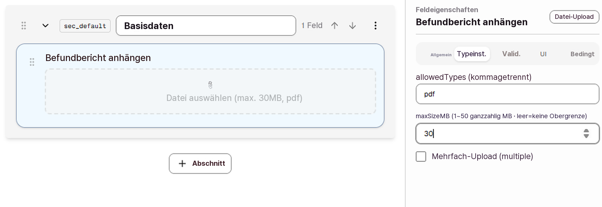
pdf · 30 ändert sich der Hinweis im Anhangbereich sofort mitallowedTypes (kommagetrennt) — geben Sie die zulässigen Erweiterungen durch Kommas getrennt ein. In der Aufnahme bleibt nur pdf. Geben Sie nur die Erweiterung ohne Punkt (.) ein.
maxSizeMB — die maximale Größe einer einzelnen Datei (MB). In der Aufnahme 30. Es können nur ganze Zahlen zwischen 1~50 festgelegt werden; abweichende Werte werden automatisch korrigiert.
Ergebnis von ①~② — der Hinweis im Anhangbereich ändert sich auf „Datei auswählen (max. 30MB, pdf)“.
Mehrfach-Upload (multiple) — wird in 3.3 behandelt.
Zu beachten
Unbedingt prüfen Datenschäden · Formular nicht abschließbar
- • ⛔ Wird die Begrenzung nach der Veröffentlichung enger gefasst, bleiben bereits hochgeladene Dateien unverändert erhalten. Nur neue Anhänge werden blockiert; bestehende Dateien werden weder gelöscht noch wird eine Warnung angezeigt — prüfen Sie vor einer Einschränkung im laufenden Betrieb zuerst die bereits angehängten Dateien.
- • ⛔ Die Größenobergrenze kann 50MB nicht überschreiten. Auch wenn ein größerer Wert eingegeben wird, wird er auf 50 korrigiert; dies ist die systemweite Obergrenze. Verwenden Sie für große Videodaten nicht dieses Feld, sondern ein separates Übermittlungsverfahren.
Leicht missverständliches Verhalten
- • Die Erweiterung allein garantiert nicht den Inhalt. Auch eine andere Datei, die in
.pdfumbenannt wurde, kann durchgelassen werden — die Inhaltsprüfung erfolgt in der SDV-Phase durch einen Menschen. 2.3
Hinweis
- • Erweiterungen werden durch Kommas getrennt und ohne Punkt angegeben. Schreiben Sie z. B.
pdf, jpg.
3.3Mehrfach-Upload (multiple)
Überblick
Legt fest, ob nur eine Datei oder mehrere Dateien angenommen werden. Ist er ausgeschaltet, kann nur eine Datei angehängt werden, und eine neue Datei ersetzt die bestehende. Ist er eingeschaltet, können mehrere Dateien gesammelt werden — verwenden Sie dies für Unterlagen, die als Bündel anzunehmen sind, z. B. auf mehrere Seiten verteilte Befundberichte oder aus mehreren Winkeln aufgenommene Fotos.
Bildschirmbeschreibung
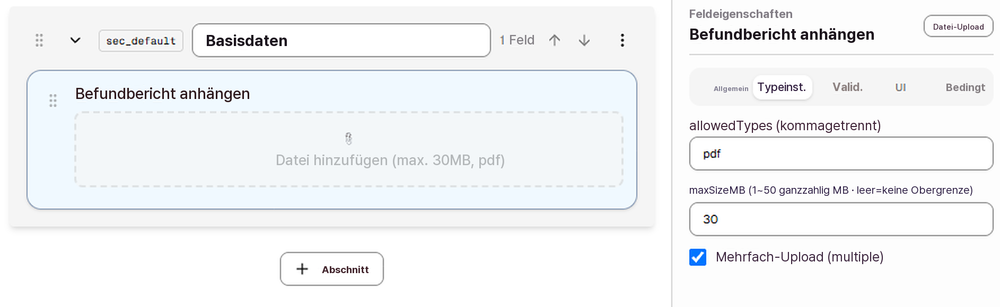
Mehrfach-Upload (multiple) — wenn ausgewählt, können mehrere Dateien angehängt werden.
Der Hinweis im Anhangbereich ändert sich auf „Datei hinzufügen (max. 30MB, pdf)“. Vom ausgeschalteten Zustand „Datei auswählen“ unterscheidet er sich nur in diesem einen Wort.
allowedTypes · maxSizeMB — die in 3.2 eingestellten Werte. Die Größenbegrenzung gilt je Datei und ist unabhängig von der Anzahl.
Zu beachten
Unbedingt prüfen Datenschäden · Formular nicht abschließbar
- • ⛔ Ist er ausgeschaltet, ersetzt eine neue Datei die bestehende. Hängt der Erfasser in der Absicht, etwas hinzuzufügen, erneut an, wird die zuvor hochgeladene Datei ersetzt — wenn mehrere Seiten anzunehmen sind, schalten Sie ihn unbedingt ein.
- • ⛔ Eine maximale Anzahl kann nicht festgelegt werden. Im eingeschalteten Zustand sammeln sich Dateien ohne Begrenzung; geben Sie die benötigte Anzahl daher im Hilfetext und in helpText an. 2.1 · 5.4
- • Seien Sie vorsichtig, wenn Sie den zuvor eingeschalteten Mehrfach-Upload wieder ausschalten. Wird der Mehrfach-Upload in einem Feld ausgeschaltet, in dem bereits mehrere Dateien angehängt sind, ändern sich spätere Anhänge auf das Ersetzungsverfahren, was zu Verwirrung führt.
Leicht missverständliches Verhalten
- • Die Größenbegrenzung gilt je Datei. Bei 30MB und eingeschaltetem Mehrfach-Upload können mehrere Dateien zu je 30MB hochgeladen werden. 3.2
Tab „Validierung“ — Wertprüfung vor dem Speichern
- 4.1Ohne Validierungsregeln
- 4.2Regel hinzufügen
- 4.3Fertig erstellte Regel — Vergleich mit anderem Feld
4.1Ohne Validierungsregeln
Überblick
Tab, in dem Regeln gesammelt werden, die vor dem Speichern prüfen, ob ein Wert die Bedingungen erfüllt. Beim Datei-Upload werden Format und Größe bereits im Tab „Typeinstellungen“ begrenzt, sodass in diesem Tab kaum etwas gesondert zu prüfen ist — verwenden Sie ihn nur, wenn Sie die Beziehung zu anderen Feldern prüfen. 4.3
Bildschirmbeschreibung
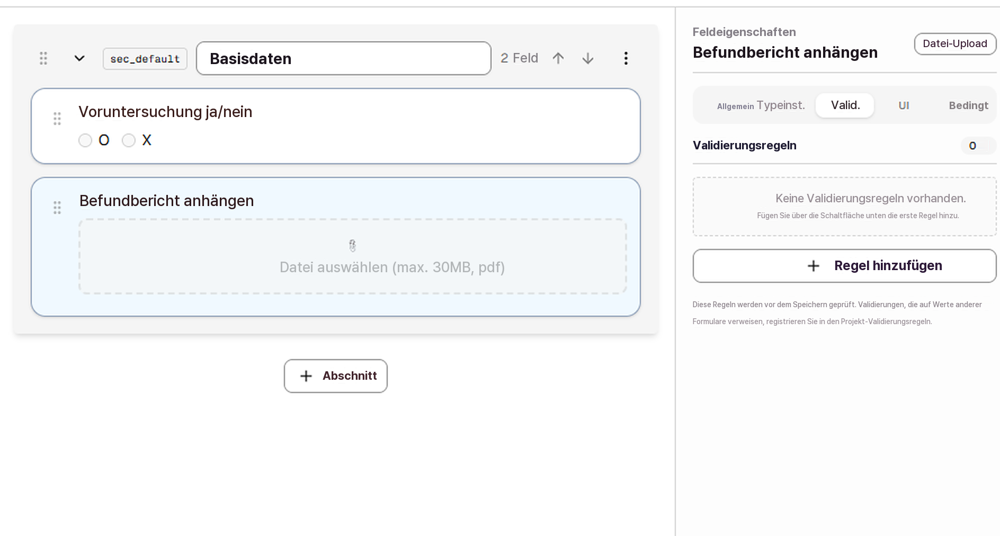
[+ Regel hinzufügen] — erstellt die erste Regel. Der Bildschirm nach der Auswahl wird in 4.2 erläutert.
Bereich Validierungsregeln und Anzahl der registrierten Regeln. Anfangs 0 Regeln.
Ohne Regeln erscheint der Hinweis „Keine Validierungsregeln vorhanden. Fügen Sie über die Schaltfläche unten die erste Regel hinzu.“
Hinweis unten — „Diese Regeln werden vor dem Speichern geprüft. Validierungen, die auf Werte anderer Formulare verweisen, registrieren Sie in den Projekt-Validierungsregeln.“
Zu beachten
Unbedingt prüfen Datenschäden · Formular nicht abschließbar
- • ⛔ Validierungen, die auf Werte anderer Formulare verweisen, können hier nicht erstellt werden. Registrieren Sie solche Regeln im Bildschirm „Projekt-Validierungsregeln“.
- • Der Tab „Validierung“ wird nicht je nach Typ gesperrt. Da auch Regeln wählbar sind, die nicht zu Dateien passen, müssen Sie selbst prüfen, ob die gewählte Regel für diesen Typ anwendbar ist. 4.2
Leicht missverständliches Verhalten
- • Format · Größenbegrenzung werden nicht hier, sondern im Tab „Typeinstellungen“ festgelegt. Da dort bereits das Anhängen selbst blockiert wird, müssen Sie denselben Inhalt nicht doppelt als Regel anlegen. 3.2
- • Die Aufnahme enthält zwei Felder: „Voruntersuchung ja/nein“ (Einzelauswahl) und „Befundbericht anhängen“ — da je nach Antwort im ersten Feld entschieden wird, ob angehängt werden darf, wird in 4.3 eine Regel erstellt, die beide Felder verbindet.
4.2Regel hinzufügen
Überblick
Wenn Sie in 4.1 [+ Regel hinzufügen] wählen, wird der Block Regel 1 erstellt. Anfangs ist „Wertebereich“ eingestellt, was bei Dateien nicht anwendbar ist, da sie kein Größer oder Kleiner haben — ändern Sie auf „Vergleich mit anderem Feld“. 4.3
Bildschirmbeschreibung
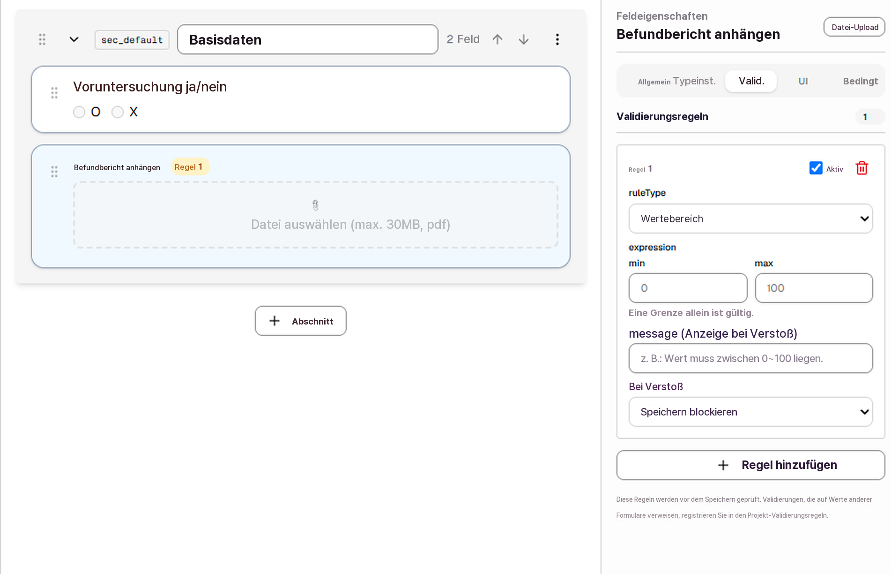
[+ Regel hinzufügen] — erstellt eine weitere Regel. (Dieselbe Schaltfläche, die Sie in 4.1 gewählt haben.)
Neben dem Anzeigenamen auf dem Canvas erscheint das Badge „Regel 1“.
Die Regelanzahl ändert sich auf 1 Regel.
Checkbox Aktiv und Symbol Löschen — Sie können die Regel vorübergehend aussetzen, ohne sie zu löschen.
ruleType — die Art der Regel. Direkt nach dem Erstellen ist „Wertebereich“ eingestellt; ändern Sie sie auf „Vergleich mit anderem Feld“.
min — das Feld für die Untergrenze, das bei Auswahl von Wertebereich erscheint.
max — das Feld für die Obergrenze, das unter derselben Bedingung erscheint.
message (Anzeige bei Verstoß) — der Text, der Benutzern bei einem Regelverstoß angezeigt wird.
Bei Verstoß — Wählen Sie Speichern blockieren oder Warnung. (Je nach ruleType ist die Auswahl teils nicht möglich — 4.3)
Die blasse Schrift 0 · 100 und „Eine Grenze allein ist gültig.“ sind Hinweise zum Wertebereich und keine eingestellten Werte.
Zu beachten
Unbedingt prüfen Datenschäden · Formular nicht abschließbar
- • ⛔ Verstehen Sie „Wertebereich“ nicht als Dateianzahl oder -größe. Diese Regel prüft Zahlenwerte und blockiert beim Datei-Upload daher nichts. Für die Größenbegrenzung ist maxSizeMB 3.2, für die Anzahl der Mehrfach-Upload 3.3 zuständig.
- • ⛔ Verwenden Sie auch „Format (Regex)“ nicht. Für die zulässigen Erweiterungen ist allowedTypes zuständig. Mit einem regulären Ausdruck können ordnungsgemäß angehängte Dateien abgelehnt werden. 3.2
- • Bleibt message leer, wissen Benutzer nicht, warum gesperrt wurde. Geben Sie unbedingt einen Text ein.
Leicht missverständliches Verhalten
- • Bei diesem Typ ist „Vergleich mit anderem Feld“ nützlich. Damit wird eine Beziehung wie „Anhängen nur möglich, wenn auf die vorige Frage eine bestimmte Antwort gegeben wurde“ geprüft. 4.3
4.3Fertig erstellte Regel — Vergleich mit anderem Feld
Überblick
Wenn Sie ruleType auf Vergleich mit anderem Feld ändern, wird mit dem Wert eines anderen Felds im selben Formular verglichen. Beim Datei-Upload ist dies die einzige tatsächlich verwendbare Regelart; damit lässt sich eine Beziehung abbilden, bei der je nach Antwort auf die vorige Frage entschieden wird, ob angehängt werden darf.
Bildschirmbeschreibung
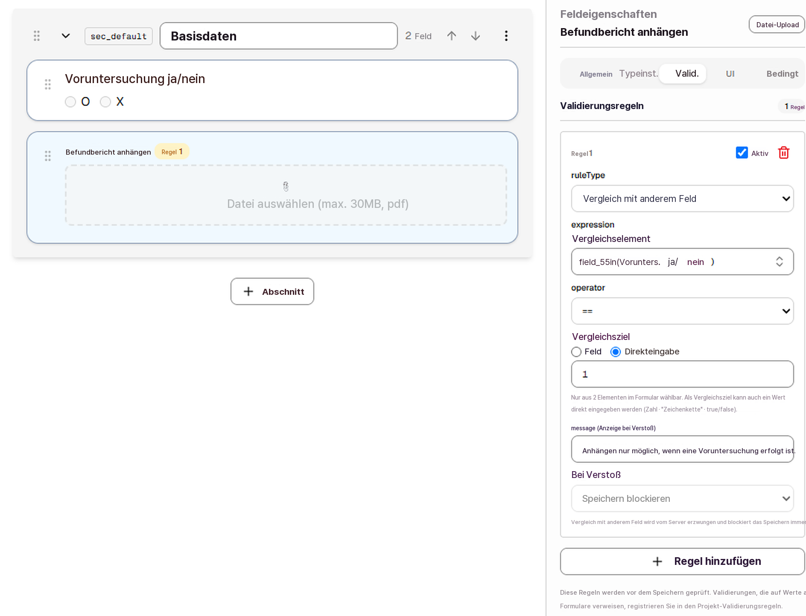
1 istruleType = Vergleich mit anderem Feld — Wenn ausgewählt, werden die Felder darunter für den Vergleich umgestellt.
Vergleichselement — wählen Sie ein anderes Feld im selben Formular. In der Aufnahme field_55in(Voruntersuchung ja/nein), ein Einzelauswahlfeld.
operator — die Vergleichsart. In der Aufnahme == (gleich).
Vergleichsziel — wählen Sie zwischen Feld und Direkteingabe. In der Aufnahme wurde per Direkteingabe 1 eingegeben — der gespeicherte Wert von „Voruntersuchung ja/nein“.
message (Anzeige bei Verstoß) — in der Aufnahme Anhängen nur möglich, wenn eine Voruntersuchung erfolgt ist..
Bei Verstoß — grau und inaktiv. Wie der Bildschirmhinweis sagt: „Vergleich mit anderem Feld wird vom Server erzwungen und blockiert das Speichern immer.“ — bei dieser Regel kann keine Warnung gewählt werden; sie ist auf Speichern blockieren festgelegt.
Bildschirmhinweis — „Nur aus 2 Elementen im Formular wählbar. Als Vergleichsziel kann auch ein Wert direkt eingegeben werden (Zahl · "Zeichenkette" · true/false).“
Zu beachten
Unbedingt prüfen Datenschäden · Formular nicht abschließbar
- • ⛔ Als Vergleichsziel wird nicht der auf dem Bildschirm sichtbare Text, sondern der gespeicherte Wert eingegeben. „Voruntersuchung ja/nein“ in der Aufnahme erscheint auf dem Bildschirm als
O·X, der gespeicherte Wert ist jedoch1. Prüfen Sie zuerst den gespeicherten Wert in der Optionsliste des referenzierten Felds. - • ⛔ Prüfen Sie die Richtung der Bedingung vor der Veröffentlichung. Validierungsregeln werden als Bedingung formuliert, die erfüllt sein muss. Prüfen Sie nach dem Einstellen das tatsächliche Verhalten in der Vorschau.
Leicht missverständliches Verhalten
- • Diese Regel kann nicht als Warnung eingestellt werden. Da Bei Verstoß auf Speichern blockieren festgelegt ist, verwenden Sie sie nur für Beziehungen, die unbedingt verhindert werden müssen.
- • Ist kein einziger Anhang vorhanden, wird die Regel nicht geprüft. Der leere Zustand ist kein Prüfgegenstand; das Fehlen eines Anhangs zu verhindern, ist Aufgabe von Pflichtfeld 2.2.
Tab „UI“ — Bildschirmanordnung und Hinweistexte
- 5.1Gesamtaufbau des Tabs „UI“
- 5.2Layoutbreite
- 5.3Schreibgeschützt · Ausblenden
- 5.4helpText (Hilfetext)
5.1Gesamtaufbau
Überblick
Tab, in dem nicht der Wert selbst, sondern Anordnung und Hinweise auf dem Bildschirm festgelegt werden. Die Einstellungen in diesem Tab ändern die gespeicherten Daten selbst nicht. Ausblenden verbirgt das Feld jedoch nur auf dem Bildschirm, angehängte Dateien bleiben erhalten; lesen Sie daher vor der Verwendung 5.3.
Bildschirmbeschreibung
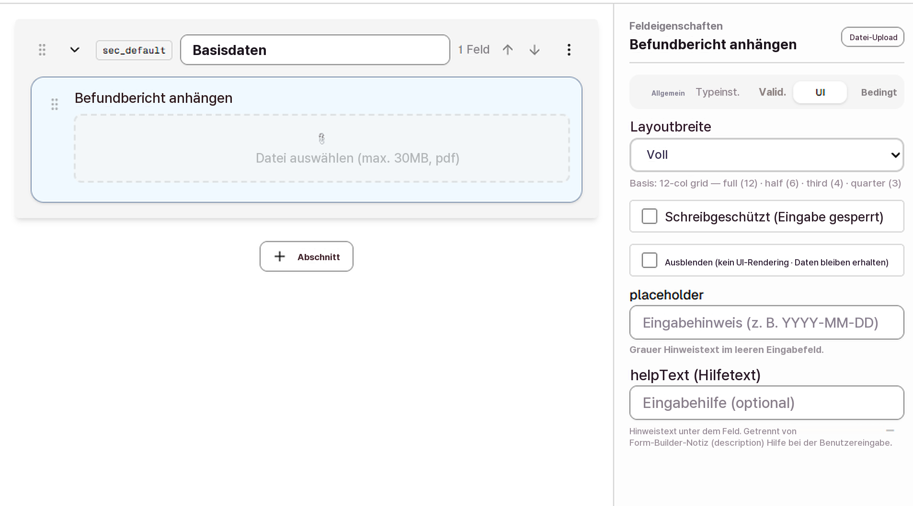
Layoutbreite — die Breite, die dieses Feld in einer Formularzeile einnimmt. 5.2
Schreibgeschützt (Eingabe gesperrt) — das Feld wird angezeigt, Anhängen · Löschen wird jedoch verhindert. 5.3
Ausblenden (kein UI-Rendering · Daten bleiben erhalten) — verbirgt das Feld auf dem Bildschirm. 5.3
helpText (Hilfetext) — Hinweistext, der unter dem Anhangbereich angezeigt wird. 5.4
placeholder — das Element wird angezeigt, bei diesem Typ aber nicht angewendet. Den Hinweistext im Anhangbereich setzt das System direkt aus den Werten des Tabs „Typeinstellungen“ zusammen („Datei auswählen (max. 10MB, pdf, png, jpg)“); er kann hier daher nicht geändert werden. 3.1 · 5.4
Typ-Badge „Datei-Upload“
Zu beachten
Unbedingt prüfen Datenschäden · Formular nicht abschließbar
- • Eine Eingabe in placeholder erscheint nicht auf dem Bildschirm. Da weder ein Fehler noch eine Warnung angezeigt wird, verschwindet der eingetragene Hinweis unbemerkt — schreiben Sie Hinweise in helpText. 5.4
Leicht missverständliches Verhalten
- • Wenn Sie den Hinweistext im Anhangbereich ändern möchten, ändern Sie den Tab „Typeinstellungen“. Werden zulässige Formate und Größe geändert, ändert sich dieser Text entsprechend. 3.2
- • Die Einstellungen in diesem Tab ändern gespeicherte Dateien nicht. Nur Anordnung und Hinweise ändern sich.
Hinweis
- • Verwenden Sie Schreibgeschützt und Ausblenden nicht zusammen. Ausblenden hat Vorrang, die Einstellung Schreibgeschützt bleibt dann wirkungslos. 5.3
5.2Layoutbreite
Überblick
Legt fest, welche Breite dieses Feld in einer Formularzeile einnimmt. Beim Datei-Upload wird der gesamte Anhangbereich schmaler; bei geringer Breite kann der Hinweistext abgeschnitten werden oder die Namen angehängter Dateien sind nicht vollständig sichtbar.
Bildschirmbeschreibung
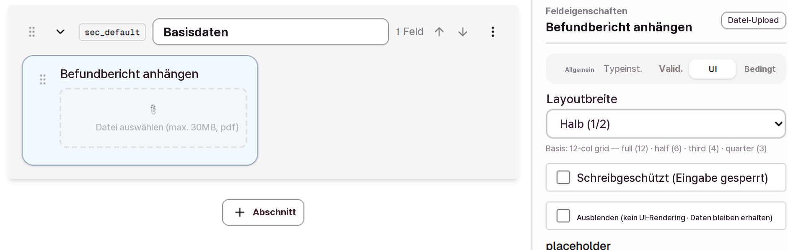
Layoutbreite — Wählen Sie zwischen Voll · Halb (1/2) · 1/3 · 1/4.
Auf dem Canvas wird auch der Anhangbereich schmaler. Auf dem restlichen Platz in derselben Zeile werden andere Felder angeordnet.
Basis: 12-col grid — wie der Bildschirmhinweis sagt: „full (12) · half (6) · third (4) · quarter (3)“.
Zu beachten
Unbedingt prüfen Datenschäden · Formular nicht abschließbar
- • ⛔ Verkleinern Sie nicht auf 1/3 · 1/4. Der Hinweistext im Anhangbereich ist lang („Datei auswählen (max. 30MB, pdf)“) und wird abgeschnitten, sodass er nicht lesbar ist. Wenn Sie verkleinern müssen, gehen Sie höchstens bis Halb.
- • Verkleinern Sie die Breite nicht bei Feldern mit eingeschaltetem Mehrfach-Upload. Angehängte Dateien sammeln sich als Liste; ist die Breite gering, werden Dateinamen abgeschnitten und es ist nicht erkennbar, was hochgeladen wurde. 3.3
Leicht missverständliches Verhalten
- • Volle Breite wird empfohlen. Der Anhangbereich ist ohnehin ein Element, das viel Platz beansprucht.
Hinweis
- • Ohne Angabe gilt die volle Breite.
5.3Schreibgeschützt · Ausblenden
Überblick
Einstellungen, mit denen ein Feld angezeigt, aber nicht änderbar ist oder auf dem Bildschirm verborgen wird, während angehängte Dateien erhalten bleiben. Keine der beiden löscht bereits hochgeladene Dateien.
Bildschirmbeschreibung
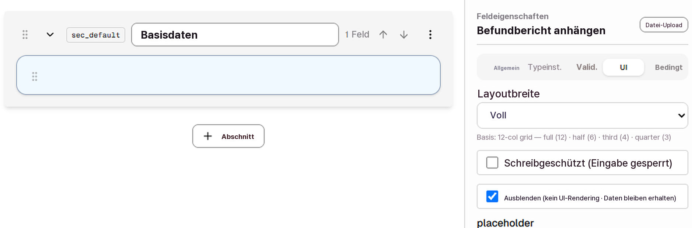
Schreibgeschützt (Eingabe gesperrt) — wenn ausgewählt, können angehängte Dateien angesehen, aber nicht neu hochgeladen oder gelöscht werden.
Ausblenden (kein UI-Rendering · Daten bleiben erhalten) — Wenn aktiviert, wird dieses Feld in der Eingabemaske nicht angezeigt.
Von der Canvas-Karte bleibt nur ein leerer Rahmen. Weder Anzeigename noch Anhangbereich werden angezeigt.
Layoutbreite — der in 5.2 eingestellte Wert.
Zu beachten
Unbedingt prüfen Datenschäden · Formular nicht abschließbar
- • ⛔ Ausblenden löscht angehängte Dateien nicht. Bereits hochgeladene Dateien bleiben unverändert in der Ablage und sind in Export und Audit-Trail enthalten. Wird Ausblenden verwendet, um eine falsch hochgeladene Datei zu verbergen, bleibt die Datei erhalten und verschwindet nur vom Bildschirm — löschen Sie sie in der Eingabemaske.
- • ⛔ Behandeln Sie Dateien mit personenbezogenen Daten nicht durch Ausblenden. Wurde versehentlich ein Befundbericht mit aufgedruckten Identifikationsdaten hochgeladen, muss die Datei gelöscht und nicht verborgen werden. 1.1
Leicht missverständliches Verhalten
- • Verwenden Sie Schreibgeschützt für bereits eingereichte Unterlagen. Es eignet sich, um Anhänge zu fixieren, die sich nicht mehr ändern dürfen.
- • Um ein Feld abhängig von Bedingungen zu verbergen, verwenden Sie die bedingte Anzeige. Ausblenden in diesem Tab verbirgt das Feld immer. Kap. 6
5.4helpText (Hilfetext)
Überblick
Stelle für den Text, der dem Erfasser mitteilt, was wie anzuhängen ist. Beim Datei-Upload sind Format · Größe · Anzahl auf verschiedene Tabs verteilt; für den Erfasser ist dieser Text die einzige Stelle, an der alles auf einmal ersichtlich ist. placeholder im selben Tab wird bei diesem Typ nicht angewendet.
Bildschirmbeschreibung
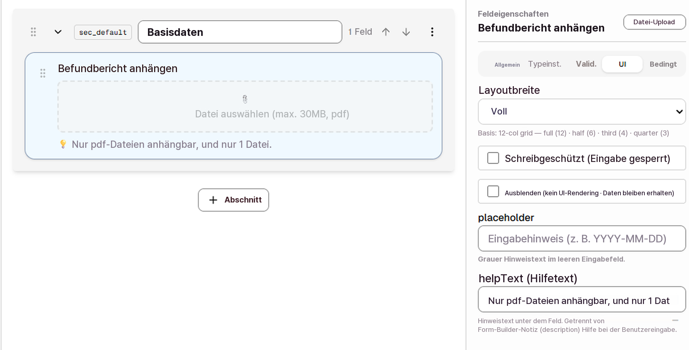
helpText (Hilfetext) — geben Sie den Hinweistext ein, der unter dem Anhangbereich angezeigt wird.
Erscheint unter dem Anhangbereich zusammen mit dem Symbol 💡. Die Aufnahme zeigt „Nur pdf-Dateien anhängbar, und nur 1 Datei.“.
placeholder — wird bei diesem Typ nicht angewendet. Eine Eingabe erscheint nicht auf dem Bildschirm, und es wird auch kein Fehler angezeigt. 5.1
Typ-Badge „Datei-Upload“
Zu beachten
Unbedingt prüfen Datenschäden · Formular nicht abschließbar
- • ⛔ Schreiben Sie keine Hinweise in placeholder. Bei diesem Typ erscheinen sie nicht auf dem Bildschirm, und der eingetragene Inhalt verschwindet unbemerkt.
- • ⛔ Geben Sie unbedingt an, dass Identifikationsdaten vor dem Anhängen zu schwärzen sind. Dieser Hinweis ist das einzige Mittel, um zu verhindern, dass Unterlagen mit aufgedrucktem Namen · Registriernummer unverändert hochgeladen werden. 1.1
- • Formulieren Sie die Begrenzungen noch einmal in eigenen Worten. Wenn Sie wie in der Aufnahme Format · Anzahl zusammen angeben, kann der Erfasser dies vor dem Anhängen prüfen. Wenn Sie die Begrenzungen ändern, müssen Sie auch diesen Text anpassen. 3.2 · 3.3
Leicht missverständliches Verhalten
- • description und helpText sind unterschiedliche Elemente. Wie der Bildschirmhinweis sagt, ist helpText „Getrennt von Form-Builder-Notiz (description) — Hilfe bei der Benutzereingabe“. 2.1
Tab „Bedingt“ — Anzeige abhängig von anderen Werten
- 6.1Bedingte Anzeige aktivieren
- 6.2Bedingung festlegen
6.1Bedingte Anzeige aktivieren
Überblick
Funktion, mit der dieses Feld abhängig vom Wert eines anderen Felds angezeigt oder verborgen wird. Sie passt besonders gut zum Datei-Upload — wenn Probanden, auf die es nicht zutrifft, der Anhangbereich gar nicht erst angezeigt wird, lässt sich verhindern, dass unnötige Unterlagen hochgeladen werden.
Bildschirmbeschreibung
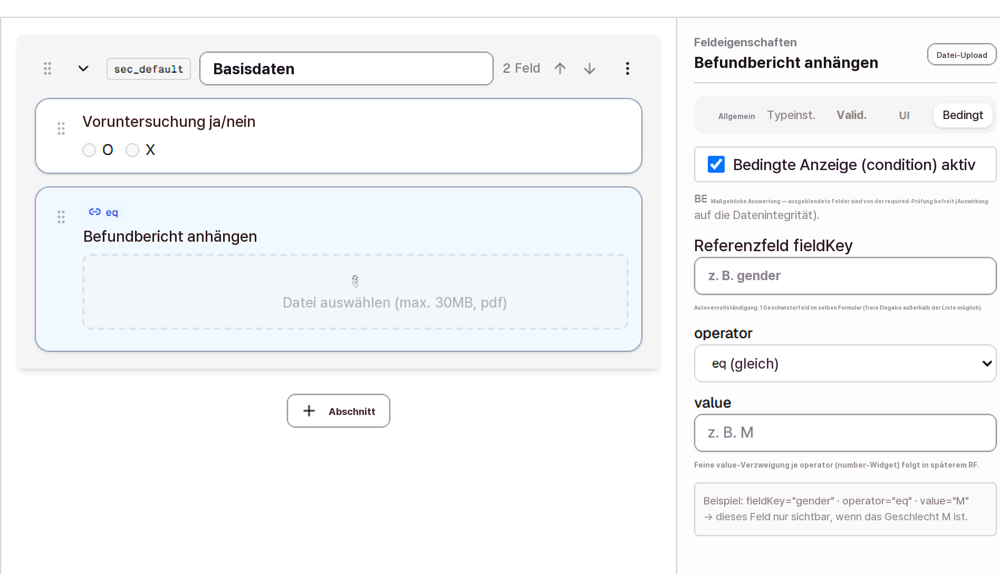
Bedingte Anzeige (condition) aktiv — Wenn aktiviert, werden die folgenden Bedingungseinstellungen angezeigt.
Über dem Feld auf dem Canvas erscheint das Badge 🔗 eq und zeigt an, dass eine Bedingung angewendet wird.
Referenzfeld fieldKey — ein anderes Feld im selben Formular, das als Grundlage der Bedingung dient. Geschwisterfelder desselben Formulars werden automatisch vervollständigt; Werte, die nicht in der Liste stehen, können Sie auch direkt eingeben.
operator — die Vergleichsart. Standard ist eq (gleich).
value — der Vergleichswert. Geben Sie den gespeicherten Wert des Referenzfelds ein. 6.2
⚠ Bildschirmhinweis — „ausgeblendete Felder sind von der required-Prüfung befreit (Auswirkung auf die Datenintegrität).“ Die Bedingung wird vom System ausgewertet.
Beispiel unten — fieldKey="gender" · operator="eq" · value="M" → dieses Feld nur sichtbar, wenn das Geschlecht M ist.
Zu beachten
Unbedingt prüfen Datenschäden · Formular nicht abschließbar
- • ⛔ Wird eine Bedingung festgelegt, entfällt die Pflichtprüfung. Solange das Feld verborgen ist, weil die Bedingung nicht erfüllt ist, wird das Formular auch als Pflichtfeld ohne Anhang abgeschlossen. Ist die Bedingung falsch, fehlen daher Unterlagen ohne Fehlermeldung.
- • ⛔ Wird die Bedingung nach dem Anhängen falsch, verschwindet der Anhangbereich vom Bildschirm. Die Datei selbst bleibt in der Ablage, der Erfasser kann sie jedoch weder ansehen noch löschen — seien Sie besonders vorsichtig, wenn Sie das zugrunde liegende Feld später ändern.
Leicht missverständliches Verhalten
- • Prüfen Sie die bedingte Anzeige vor einer Validierungsregel 4.3. Werden Personen, auf die es nicht zutrifft, gar nicht erst gefragt, kann auch nichts falsch angehängt werden.
Hinweis
- • Wenn Sie die Bedingung aktivieren und das Referenzfeld leer lassen, ist die Bedingung nicht erfüllt. Geben Sie unbedingt ②~④ vollständig ein. 6.2
6.2Bedingung festlegen
Überblick
Zustand, in dem die in 6.1 aktivierte Bedingung vollständig eingegeben ist. Mit dieser Einstellung wird der Anhangbereich in der Eingabemaske nur angezeigt, wenn der Wert des Felds „Voruntersuchung ja/nein“ 1 ist. Da das Referenzfeld eine Einzelauswahl ist, ist der gespeicherte Wert eine Zeichenkette; dieser Wert wird unverändert im Feld value eingetragen, sodass die Bedingung korrekt funktioniert.
Bildschirmbeschreibung
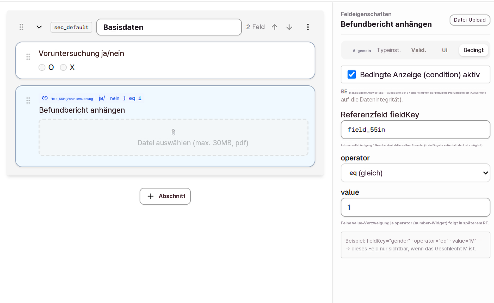
Voruntersuchung ja/nein 1 istReferenzfeld fieldKey = field_55in — verweist auf das Feld „Voruntersuchung ja/nein“ im selben Formular.
Ergebnis nach Eingabe von ①~③ — das Badge auf dem Canvas wird zu 🔗 field_55in(Voruntersuchung ja/nein) eq 1 konkretisiert.
operator = eq (gleich)
value = 1 — geben Sie nicht das auf dem Bildschirm sichtbare O, sondern den gespeicherten Wert dieser Option ein.
⚠ Bildschirmhinweis — „ausgeblendete Felder sind von der required-Prüfung befreit (Auswirkung auf die Datenintegrität).“
Beispiel unten — fieldKey="gender" · operator="eq" · value="M" → dieses Feld nur sichtbar, wenn das Geschlecht M ist.
Zu beachten
Unbedingt prüfen Datenschäden · Formular nicht abschließbar
- • ⛔ Geben Sie bei value nicht den Bildschirmtext, sondern den gespeicherten Wert ein. Wenn Sie
Oeingeben, ist die Bedingung nicht erfüllt, und der Anhangbereich wird nie angezeigt. Prüfen Sie zuerst den gespeicherten Wert in der Optionsliste des referenzierten Felds. - • ⛔ Wird der gespeicherte Wert des Referenzfelds geändert, bricht die Bedingung unbemerkt. Wird der gespeicherte Wert z. B. von
1aufYgeändert, ist diese Bedingung ohne Fehlermeldung einfach nicht mehr erfüllt — deshalb ist eine Änderung gespeicherter Werte nach der Veröffentlichung gefährlich. - • Auch wenn Sie den fieldKey des Referenzfelds ändern oder es löschen, bricht die Bedingung. Die Bedingung ist nicht über den Anzeigenamen, sondern über den fieldKey verknüpft. 2.1
Leicht missverständliches Verhalten
- • Prüfen Sie die Einstellung anschließend in der Vorschau. Ändern Sie den Bezugswert und prüfen Sie, ob der Anhangbereich tatsächlich erscheint und verschwindet.
Anhang
- 7.1Einstellungen je Tab auf einen Blick
- 7.2Unbedingt merken · Nicht behandelt
7.1Einstellungen je Tab auf einen Blick
Einstellungen je Tab
| Tab | Element | Was wird festgelegt | Abschnitt |
|---|---|---|---|
| Allgemein | fieldKey | Tatsächlicher Speicherschlüssel des Werts (nach dem Speichern nicht ändern) | 2.1 |
| label (Anzeigename) | Auf dem Bildschirm angezeigter Elementname | 2.1 | |
| description (Hilfetext) | Ergänzende Beschreibung unter dem Anhangbereich — was anzuhängen ist | 2.1 | |
| Pflichtfeld | Ob mindestens eine Datei vorhanden sein muss (keine Erklärung „Nicht gemessen“) | 2.2 | |
| SDV-Verifizierung | Ob Gegenstand des CRA-Quelldatenabgleichs · ob Verifizierung erforderlich | 2.3 | |
| AE-Bedeutungsrolle | Dieser Typ kann nicht zugeordnet werden — für Ja/Nein · Einzelauswahl | 1.1 | |
| Typeinstellungen | allowedTypes | Zulässige Erweiterungen (kommagetrennt · bei Erstellung pdf, png, jpg) | 3.1 · 3.2 |
| maxSizeMB | Maximale Größe einer einzelnen Datei (1~50 ganzzahlig · bei Erstellung 10) | 3.1 · 3.2 | |
| Mehrfach-Upload (multiple) | Mehrere Anhänge zulassen — ausgeschaltet: neue Datei ersetzt bestehende Datei | 3.3 | |
| Validierung | ruleType | Regelart — bei diesem Typ nutzbar ist nur Vergleich mit anderem Feld | 4.2 · 4.3 |
| Vergleichselement · operator · Vergleichsziel | Bedingung im Vergleich mit einem anderen Feld im selben Formular (Vergleich über den gespeicherten Wert) | 4.3 | |
| message | Bei Verstoß angezeigter Text | 4.3 | |
| Bei Verstoß · Aktiv | Vergleich mit anderem Feld ist auf Speichern blockieren festgelegt · Regel aktiv · inaktiv | 4.3 | |
| UI | Layoutbreite | Breite im 12-col grid (höchstens Halb · bei Mehrfach-Upload Voll) | 5.2 |
| Schreibgeschützt | Angehängte Dateien anzeigen, aber Hochladen oder Löschen verhindern | 5.3 | |
| Ausblenden | Nicht angezeigt (angehängte Dateien bleiben unverändert in der Ablage) | 5.3 | |
| helpText | Hinweis zum Anhängen (placeholder wird bei diesem Typ nicht angewendet) | 5.4 | |
| Bedingt | Bedingung aktiv | Ob bedingte Anzeige verwendet wird (von der Pflichtprüfung befreit) | 6.1 |
| Referenzfeld fieldKey | Feld im selben Formular als Grundlage der Bedingung | 6.2 | |
| operator · value | Vergleichsart und Vergleichswert (gespeicherten Wert eingeben) | 6.2 |
Unterschiede zu anderen Typen
| Element | Andere Typen | Datei-Upload |
|---|---|---|
| Anfangszustand der Typeinstellungen | Beginnt mit leeren Feldern | Standardbeschränkungen sind als Werte eingetragen 3.1 |
| „Nicht gemessen“ zulassen | Element im Tab „Allgemein“ vorhanden | Das Element selbst fehlt 2.2 · 7.2 |
| Standardwert (defaultValue) | Im Tab „Typeinstellungen“ vorhanden | Fehlt — Dateien können nicht vorbelegt werden 3.1 |
| placeholder | Als Hinweis im Eingabefeld angezeigt | Wird nicht angewendet — der Hinweis wird vom System zusammengesetzt 5.4 |
7.2Unbedingt merken · Nicht behandelt
Unbedingt merken
Unbedingt prüfen Datenschäden · Formular nicht abschließbar
- • Sorgen Sie dafür, dass Identifikationsdaten von Probanden in Dateien vor dem Anhängen geschwärzt werden. Das System prüft den Dateiinhalt nicht — das einzige Mittel dagegen sind die Hinweise in Hilfetext und helpText. 1.1 · 2.1 · 5.4
- •
pdf, png, jpg·10MBdirekt nach der Erstellung sind bereits angewendete Beschränkungen. Es sind keine Beispiele; prüfen Sie daher unbedingt, ob sie zur Studie passen. 3.1 - • Ist der Mehrfach-Upload ausgeschaltet, ersetzt eine neue Datei die bestehende. Wenn mehrere Seiten anzunehmen sind, schalten Sie ihn unbedingt ein. 3.3
- • Wird die Begrenzung nach der Veröffentlichung enger gefasst, bleiben bereits hochgeladene Dateien erhalten. Nur neue Anhänge werden blockiert, und es wird auch keine Warnung angezeigt. 3.2
- • Ausblenden löscht angehängte Dateien nicht. Falsch hochgeladene Dateien müssen nicht verborgen, sondern in der Eingabemaske gelöscht werden. 5.3
- • Bei diesem Typ gibt es keine Möglichkeit, „Nicht gemessen“ zu erklären. Kann das Original möglicherweise letztlich nicht beschafft werden, legen Sie das Feld nicht als Pflichtfeld fest, sondern ergänzen Sie ein Textfeld für die Begründung. 2.2
Leicht missverständliches Verhalten
- • Gespeichert wird die Liste der angehängten Dateien. Die Datei selbst wird in einer separaten Ablage zusammen mit einer Integritätsprüfung aufbewahrt. 1.1
- • Für Format · Größe ist nicht der Tab „Validierung“, sondern der Tab „Typeinstellungen“ zuständig. „Wertebereich“ prüft weder Dateianzahl noch Größe. 3.2 · 4.2
- • Die Größenobergrenze gilt je Datei und kann 50MB nicht überschreiten. 3.2
Hinweis
- • Bei derselben Beziehung hat die bedingte Anzeige Vorrang vor der Validierungsregel — wer nicht gefragt wird, kann auch nichts falsch anhängen. 4.3 · 6.1
Nicht in diesem Dokument behandelt
※ „Nicht gemessen“ zulassen — im Tab „Allgemein“ wird das Element nicht angezeigt. Der Grund ist, dass das System die Erklärung „Nicht gemessen“ für diesen Typ nicht unterstützt; die Aufnahme ist nicht unvollständig. Ohne Anhang wird das Feld einfach als leer erfasst. 2.2
placeholder — das Element wird im Tab „UI“ angezeigt, bei diesem Typ aber nicht angewendet. Den Hinweistext im Anhangbereich setzt das System aus den Werten des Tabs „Typeinstellungen“ zusammen. Schreiben Sie Hinweise in helpText. 5.1 · 5.4
Standardwert (defaultValue) · Automatische Berechnung (calculation) — im Tab „Typeinstellungen“ fehlen diese Elemente. Dateien können weder vorbelegt noch per Formel erzeugt werden. 3.1
AE-Bedeutungsrolle — das Element ist im Tab „Allgemein“ vorhanden, dieser Typ kann jedoch nicht zugeordnet werden. Ordnen Sie sie einem Ja/Nein- oder Einzelauswahlfeld zu. 1.1
Bildschirm zum Hochladen und Löschen von Dateien — dieses Dokument behandelt nur die Seite der Formularerstellung. Für die Verfahren, mit denen der Erfasser tatsächlich anhängt · löscht · herunterlädt, siehe das Handbuch zur Eingabemaske.
Begrenzung der maximalen Anzahl an Anhängen — es gibt kein Element, mit dem sie festgelegt werden kann. Geben Sie die benötigte Anzahl über Hilfetext und helpText an. 3.3